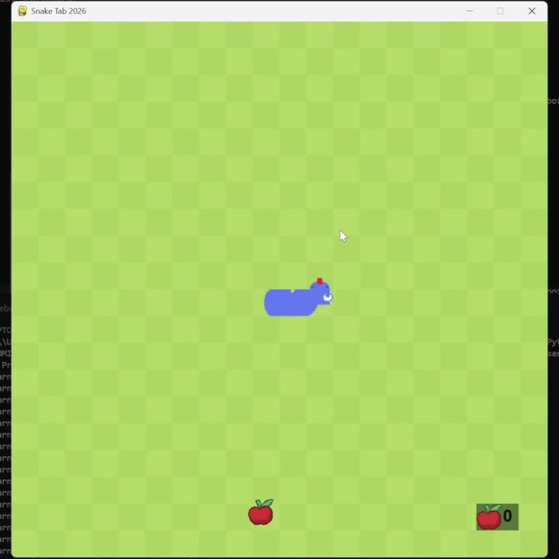
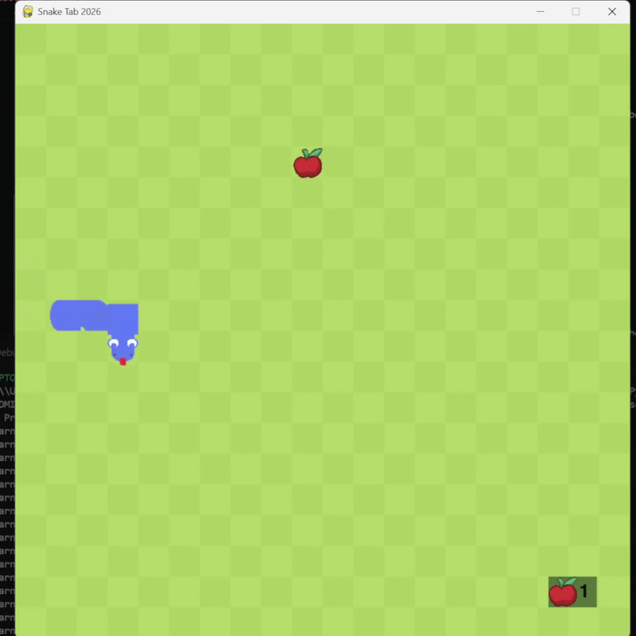
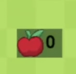
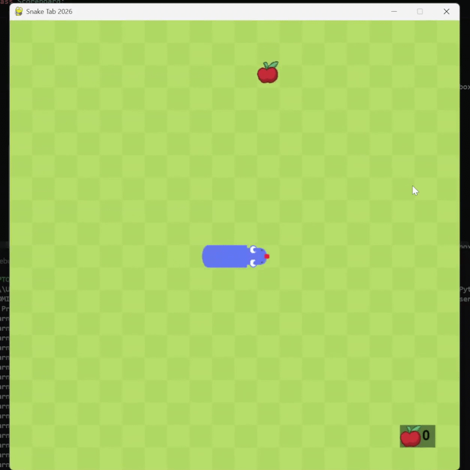

Movement
The snake moves in 4 different directions, congruent with the keyboard direction keys. The movement is smooth and precise.
Quick and simple summary of the mechanics present in the game!

The snake moves in 4 different directions, congruent with the keyboard direction keys. The movement is smooth and precise.

An apple appears at the start of the game in a random location and chooses a random direction out of 8 to start moving. If it manages to reach a wall, it'll detect a colision, which will make its momentum go the opposite way.

Its a little green square at the bottom of the screen, which keeps track of the amount of apples consumed so far, a high-score tracker of sorts.

After an apple is consumed, the snake grows one tile. This is to make the game gradually harder as well as giving it a satifying end goal.